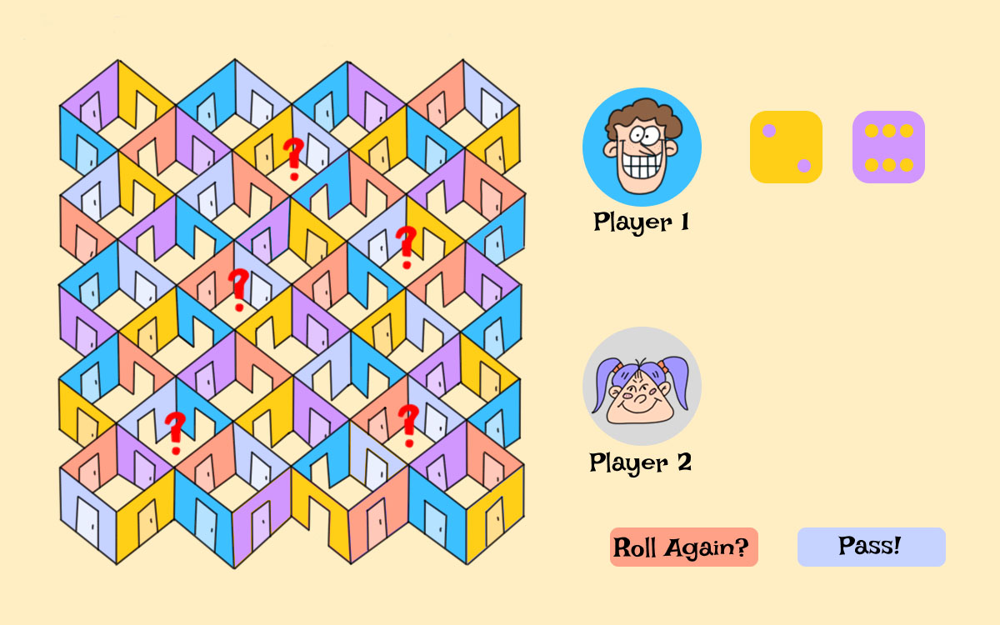
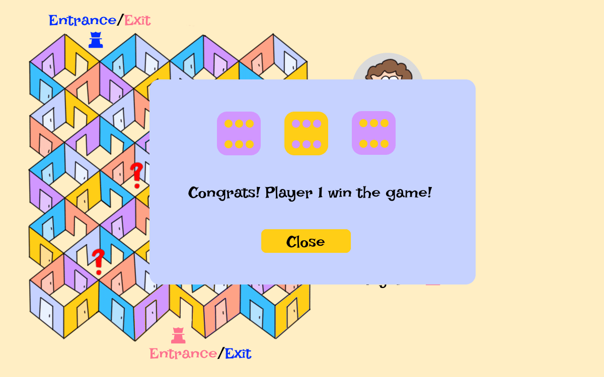

Maze Adventure is an interactive experience that uses the maze as a metaphor for decision-making and exploration. This project got inspired by the Game of Pig. Players navigate a nonlinear environment where each turn represents uncertainty, curiosity, and agency. Through movement and interaction, the game encourages players to slow down, observe, and reflect on how choices shape their path forward.
For the best experience, please view this project at a resolution of 1200 x 750.


2. Soul Debugger
Soul Debugger is an interactive narrative experience about memory loss, identity reconstruction, and AI control. Players explore a corrupted memory-repair system, collecting fragments that reveal both their past and the true nature of the world they are trapped in.
As players navigate through fragmented spaces and maze-like pathways, they uncover memory pieces that gradually reconstruct both their personal identity and the history of the world they inhabit. Each interaction emphasizes uncertainty, choice, and reflection, encouraging players to question not only what is remembered, but who controls the act of remembering. Through storytelling-driven interaction, Soul Debugger invites players to experience memory as something unstable, editable, and deeply political.
Try it!